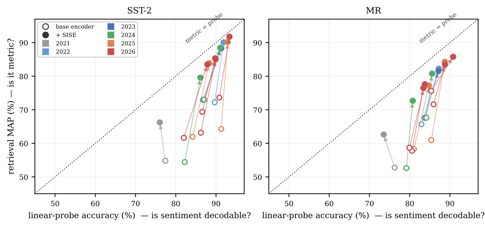

Search a vector index for "what do users dislike about this product" and the reviews you get back are usually on topic but a mix of praise and complaints. This paper measures why: across 11 text embedding models, from the 2021 MiniLM to 2026 releases, sentiment is present in the vectors and a simple linear classifier reads it with up to 91.3% accuracy, yet the cosine similarity that retrieval actually uses barely registers it, with the average similarity of same-polarity pairs exceeding opposite-polarity pairs by only 0.003 to 0.064. A small projection head of under 700,000 parameters on top of the frozen embedder, trained in seconds on a CPU, repairs this: sentiment-retrieval MAP (mean average precision; higher means same-polarity results rank higher) rises by up to 26 points, at a cost to general semantic similarity that drops to 2.4 to 12 points when the original vector is concatenated.
My take: teams doing review search, support-ticket search, opinion monitoring, or RAG that must retrieve by attitude should read this. The lesson is practical: a high leaderboard score does not mean the similarity separates the attribute you care about, and a bigger model will not fix it. The repair is cheap and needs no corpus re-encoding. But the experiments use only two English movie-review datasets, the head needs a few thousand labels, and there is no comparison with simpler linear projections.
What problem does it solve?
Retrieval, clustering, deduplication, recommendation and RAG all reduce to nearest-neighbor search in a vector space. What matters is not whether a vector contains some information but whether similarity changes because of it.
For topic and meaning the two usually coincide. The author finds sentiment is an exception, and measures the two separately:
- Linear probe accuracy: train a logistic-regression classifier on frozen vectors to tell positive from negative. High accuracy means sentiment is in the vector and linearly readable.
- Attribute Alignment Gap (AAG, proposed here): average cosine similarity of same-polarity pairs minus that of opposite-polarity pairs. Near zero means similarity is blind to sentiment.
AAG needs only class labels, no human similarity ratings, takes a few lines of code, and works for any attribute and any embedder.
Key finding: the information is there, but similarity ignores it
The paper tests 11 frozen embedders from about 22 million to 4 billion parameters, including E5, BGE, mxbai, Snowflake Arctic, Qwen3-Embedding 0.6B and 4B, Microsoft Harrier and Jina-v5, on two English sentiment datasets: SST-2 (movie review sentences) and MR (Rotten Tomatoes reviews).
Results are consistent across all models. On SST-2, probe accuracy rises from 77.4% for MiniLM to 91.3% for Qwen3-4B, clear progress over five years; AAG stays near zero, between 0.003 and 0.064, with no upward trend by year or size. Sentiment-retrieval MAP follows AAG, not probe accuracy.
The starkest case is Qwen3-Embedding-4B: the highest probe accuracy of all, yet retrieval MAP of only 64.3. A bigger model improved semantics without making similarity pay attention to sentiment.

Why this happens
The quantitative explanation is that the sentiment direction holds too small a share of the space. Take the direction between the mean positive and mean negative vectors and measure what fraction of total variance lies along it. On SST-2 it is 2.4% for MiniLM, 4.3% for Qwen3-4B and 6.7% for E5-large. Cosine similarity sums over all dimensions, so a direction holding 4% of the variance barely moves it. The 4B model's share is even lower than the 0.6B Harrier's, so scale does not help.
As for why the share is so small, the author points to the pretraining objective. Contrastive positive pairs are mostly topically related, such as queries and documents or titles and bodies. "This film is superb" and "this film is dreadful" share syntax, topic and entities and differ in one evaluative word, making them near-perfect positives, so training actively compresses the sentiment direction.
A control uses Jina-v5. This model requires the caller to specify a task, such as retrieval or classification, and the same weights produce different vectors for each. That allows a test without changing models: if encoded for classification, does it recover sentiment by itself? Switching to classification raises SST-2 sentiment-retrieval MAP from 63.2 to 73.8, but adding the repair head in retrieval mode reaches 85.1. Switching tasks recovers only about half of the head's gain, and AAG barely moves (0.039 to 0.043). The problem is not just using the wrong mode.

Sentiment is not the only case. Testing 3 models on 8 more attributes, including news topic, subjectivity, emotion, irony and stance, probes read all of them, for example 62.9 points above the majority baseline for topic, yet AAG never exceeds 0.08 and is mostly below 0.05, against 0.4 to 0.5 in a repaired sentiment space. Even topic, which contrastive learning is meant to capture, has an AAG of only 0.02 to 0.08, so this is a general property of embedders.
The repair: a small projection head
The method is called SISE (sentiment-injected sentence embeddings). The embedder stays frozen; the training set is encoded once, and a two-layer network (256 hidden units, 128 outputs) is trained on the vectors with supervised contrastive learning: sentences with the same label are pulled together and different labels pushed apart. It has 130,000 to 690,000 parameters depending on input dimension and trains in seconds on a 2-core CPU with 4,000 labeled sentences.
The author stresses this repairs similarity rather than adding information. The probe already shows sentiment is in the vector; the head discards directions that dominate cosine similarity but are irrelevant to sentiment, and amplifies the sentiment direction until it decides what is close. After repair the sentiment direction holds 85.5% to 96.7% of the variance.
Results
| Embedder | Original probe accuracy | Original MAP | MAP with head | AAG change |
|---|---|---|---|---|
| E5-large | 89.7 | 72.2 | 90.1 | 0.023 to 0.409 |
| Arctic-large | 82.2 | 54.4 | 79.6 | 0.005 to 0.264 |
| Qwen3-4B | 91.3 | 64.3 | 90.3 | 0.029 to 0.393 |
| Harrier-0.6B | 90.8 | 73.6 | 91.8 | 0.034 to 0.512 |
The table shows SST-2. The head raises AAG 7 to 61 times and sentiment-retrieval MAP by 9.8 to 26.0 points; every model from 2022 on also gains 1.4 to 5.8 points of full-data probe accuracy, with only the 2021 MiniLM slipping. Across 5 random seeds the standard deviation on SST-2 is at most 1 point, so results are stable, and they are insensitive to output size and temperature.
A useful deployment finding: with the same head, the 0.6B Harrier reaches 91.8 MAP and the 4B Qwen3 90.3, so for sentiment retrieval model size matters far less than the similarity itself. The head's output is only 128 dimensions, 20 times smaller than Qwen3-4B's 2560, and needs no corpus re-encoding, just one extra step on existing vectors.
The cost is measured too. On the general semantic similarity benchmark STS-B (the metric is the rank correlation between model similarity and human similarity ratings, times 100, from 0 to 100), the original vectors score 82 to 88 while the 128-dimensional head scores only 42 to 47, a loss of 38 to 41 points, because it learns only sentiment and drops everything else. Concatenating the original vector with the head output cuts the loss to 2.4 to 12 points. The head alone suits a dedicated sentiment index; use the concatenated version when one index must serve both.
Limitations as I see them
First, the data is narrow. Repair experiments use only two English binary movie-review datasets with 4,000 training examples each, and 8B to 12B embedders are untested.
Second, simpler baselines are missing. The author acknowledges no comparison with linear discriminant analysis or rescaling along the probe direction, with SentiCSE (a dedicated sentiment sentence encoder), or with giving the embedder a sentiment instruction. These may capture much of the gain.
Third, read the few-shot result carefully. "Two labels per class reaches the ceiling" in Figure 2 assumes the head was trained on 4,000 labels; it is not true few-shot learning.
Fourth, AAG is an absolute cosine difference, and similarity distributions differ between models, so comparing AAG values across models is not strict; read it alongside retrieval MAP.
How a team could try it
- Diagnose first: label a few hundred examples of your data for the attribute you care about (sentiment, urgency, complaint or not) and compute AAG and probe accuracy. High probe accuracy with AAG near zero means you have the same problem.
- Then repair: train a small projection head on a few thousand labels with the public code, which runs on a CPU.
- For deployment, choose between a dedicated 128-dimensional index and concatenating the head output to the original vector; the latter affects general retrieval less.
- Before launch, compare with a linear approach such as amplifying the probe direction to confirm the nonlinear head is needed.
Bottom line
Embedders contain sentiment but cosine similarity barely uses it, and bigger models do not fix that; measure AAG first, then a small head trained in seconds lets retrieval separate results by attitude.
| Dimension | Assessment |
|---|---|
| Problem importance | High. Review, ticket and opinion search all rely on similarity separating attitude |
| Novelty | Medium. The diagnostic and causal analysis are clear; the head is standard supervised contrastive learning |
| Evidence | Medium. 11 models and 9 attributes, but repair is tested on two English datasets without simple linear baselines |
| Engineering cost | Very low. Seconds on a CPU, no re-encoding, public code |
| Worth trying | Teams that retrieve by attribute should compute AAG once |